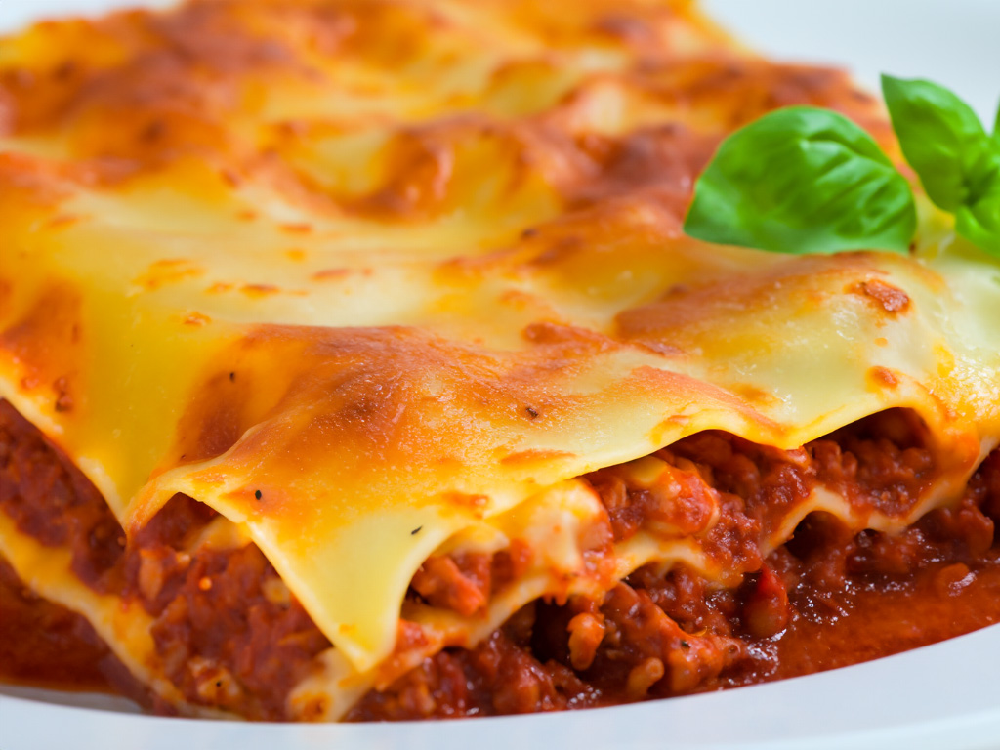

Lasagna
"Layers of savory perfection! Our classic lasagna recipe features rich, hearty layers of seasoned ground beef, creamy ricotta, and gooey melted mozzarella, all nestled between sheets of perfectly cooked lasagna noodles. Topped with a robust marinara sauce and a sprinkle of Parmesan, this mouthwatering masterpiece is baked to golden perfection. Dive into a slice of comfort with every forkful – a true crowd-pleaser that's as delicious as it is satisfying. Bon appétit!"
Ingredients
- Lasagna noodles (about 9-12 sheets)
- 500g ground beef
- 1 onion, finely chopped
- 2 cloves garlic, minced
- 1 can (ca. 88g) crushed tomatoes
- 1 can (ca. 150g) tomato paste
- 1 can (ca. 400g) tomato sauce
- 125ml water
- 2 teaspoons sugar
- 2 teaspoons dried oregano
- 1 teaspoon dried basil
- Salt and pepper to taste
- 750g ricotta cheese
- 1 large egg
- 300g shredded mozzarella cheese
- 100g grated Parmesan cheese
- Fresh basil or parsley for garnish (optional)
Steps
- Prepare the Sauce:
- In a large skillet, brown the ground beef over medium heat.
- Add chopped onions and minced garlic, sauté until onions are translucent
- Stir in crushed tomatoes, tomato paste, tomato sauce, water, sugar, oregano, basil, salt, and pepper.
- Simmer the sauce for 15-20 minutes, stirring occasionally. Adjust seasoning if needed.
- Cook the Lasagna Noodles:
- Cook the lasagna noodles according to package instructions until al dente.
- Drain and set aside.
- Prepare the Cheese Mixture:
- In a bowl, mix ricotta cheese with a beaten egg until well combined.
- Assemble the Lasagna:
- Preheat the oven to 180°C (350°F).
- In a baking dish, spread a thin layer of the meat sauce.
- Place a layer of cooked lasagna noodles over the sauce.
- Spread half of the ricotta mixture over the noodles, followed by a portion of the meat sauce and a sprinkle of
mozzarella and Parmesan cheese.
- Repeat the layers, ending with a final layer of noodles topped with meat sauce and a generous amount of mozzarella and
Parmesan.
- Bake:
- Cover the baking dish with foil and bake in the preheated oven for 25-30 minutes.
- Remove the foil and bake for an additional 10-15 minutes until the cheese is bubbly and golden.
- Serve:
- Allow the lasagna to cool for a few minutes before slicing.
- Garnish with fresh basil or parsley if desired.
- Serve and enjoy your delicious homemade lasagna!